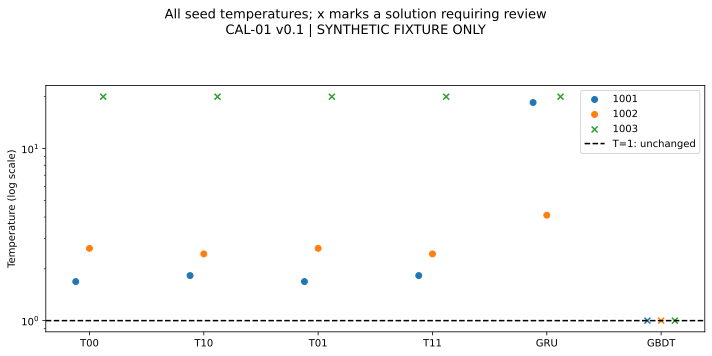
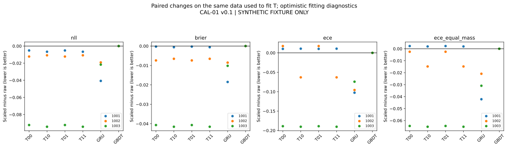
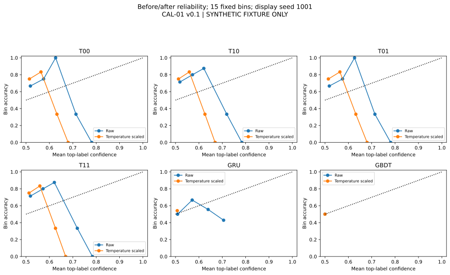
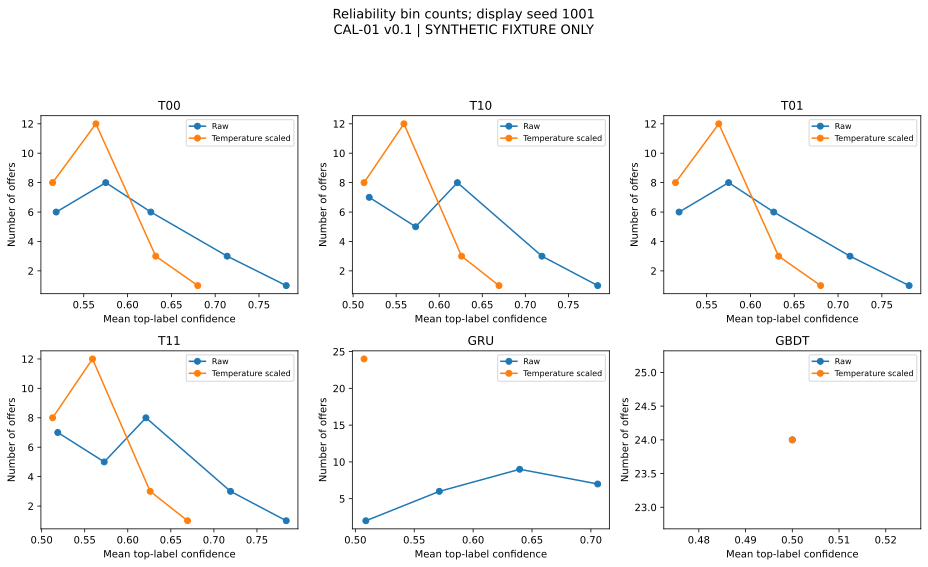
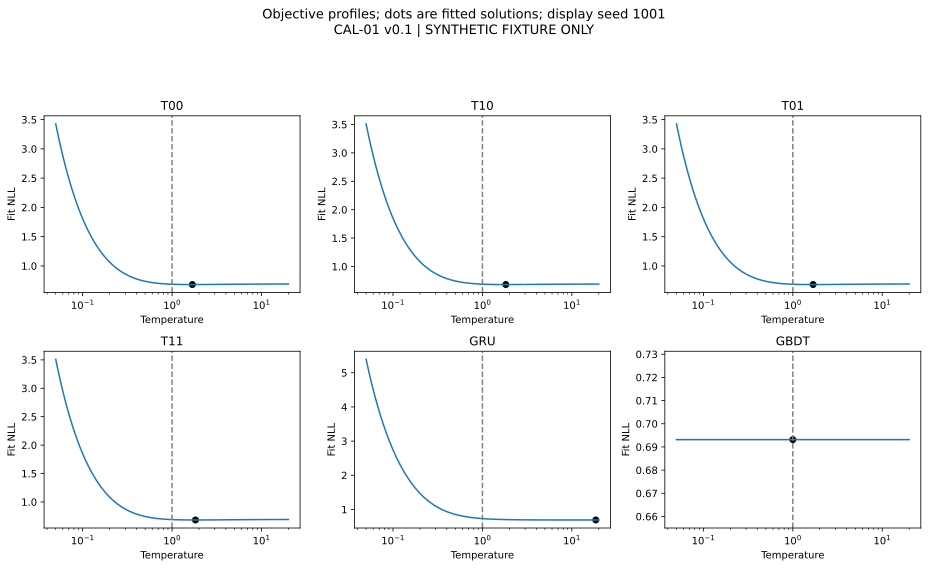

SYNTHETIC FIXTURE ONLY
Temperature changes confidence. Model weights and decisions at threshold 0.5 stay fixed. Fit-sample changes are not independent calibration benefits. ECE may worsen even when fitting NLL improves.
| Arm / seed | T | Raw NLL | Fit NLL | Solver status |
|---|---|---|---|---|
| T00/1001 | 1.686266 | 0.686565 | 0.681401 | INTERIOR |
| T10/1001 | 1.827085 | 0.689384 | 0.682741 | INTERIOR |
| T01/1001 | 1.686266 | 0.686565 | 0.681401 | INTERIOR |
| T11/1001 | 1.827085 | 0.689384 | 0.682741 | INTERIOR |
| GRU/1001 | 18.508829 | 0.733731 | 0.693011 | INTERIOR |
| GBDT/1001 | 1.000000 | 0.693147 | 0.693147 | UNIDENTIFIABLE |
| T00/1002 | 2.630147 | 0.700451 | 0.688197 | INTERIOR |
| T10/1002 | 2.442021 | 0.698384 | 0.687571 | INTERIOR |
| T01/1002 | 2.630147 | 0.700451 | 0.688197 | INTERIOR |
| T11/1002 | 2.442021 | 0.698384 | 0.687571 | INTERIOR |
| GRU/1002 | 4.098005 | 0.710186 | 0.691081 | INTERIOR |
| GBDT/1002 | 1.000000 | 0.693147 | 0.693147 | UNIDENTIFIABLE |
| T00/1003 | 20.000000 | 0.786152 | 0.693908 | BOUNDARY |
| T10/1003 | 20.000000 | 0.788189 | 0.693922 | BOUNDARY |
| T01/1003 | 20.000000 | 0.786152 | 0.693908 | BOUNDARY |
| T11/1003 | 20.000000 | 0.788189 | 0.693922 | BOUNDARY |
| GRU/1003 | 20.000000 | 0.714841 | 0.693155 | BOUNDARY |
| GBDT/1003 | 1.000000 | 0.693147 | 0.693147 | UNIDENTIFIABLE |




